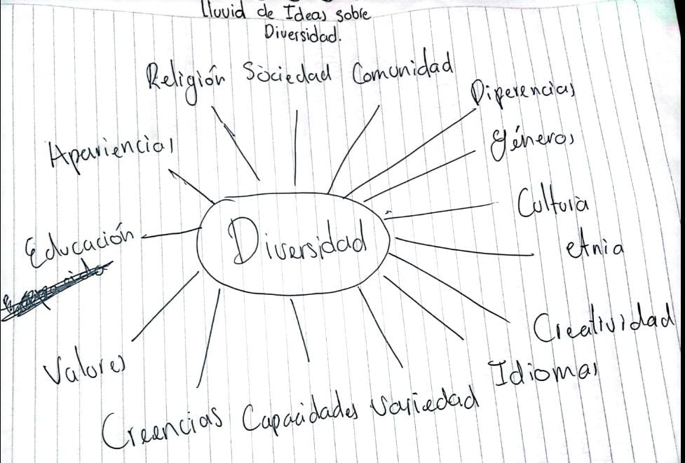
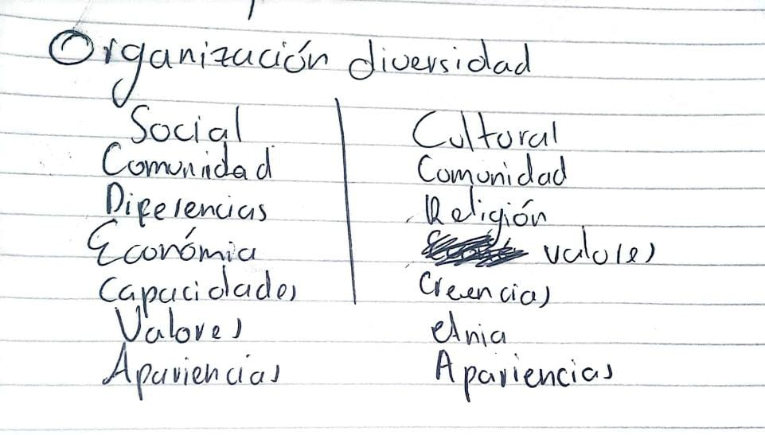
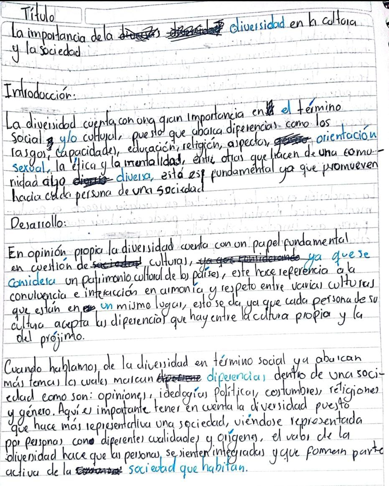
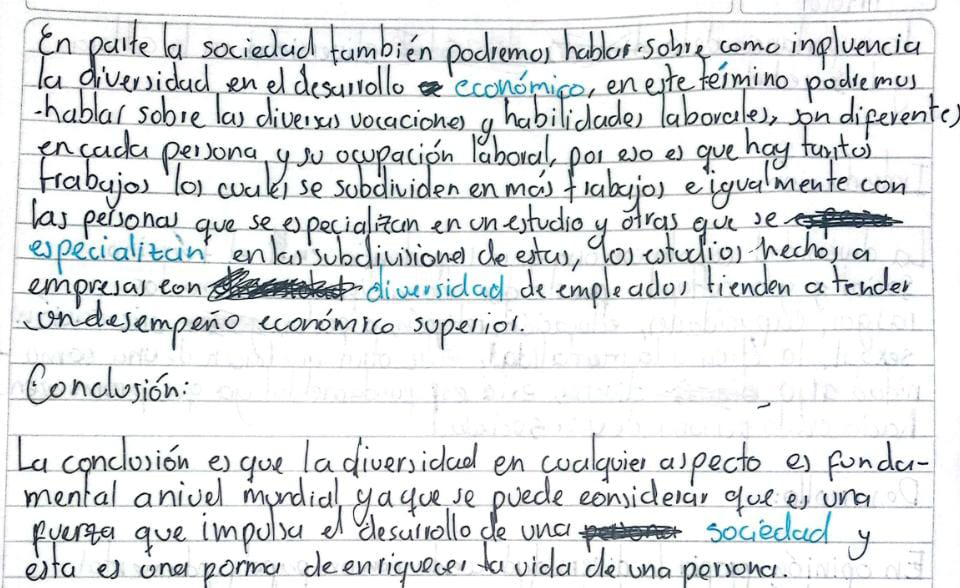

La sapa caramela
Está didactica de la clase se baso en escribir un cuento sobre una rana, el cual tendríamos que darle final nosotros y este le daría a la profesora una impresión sobre nosotros, aquí ejemplos la sapa camarela de los compañeros de grupo: .
Diego
Estaba la sapa caramelo sentada a la orilla del rio cauca en el peñasco mas alto de la región disfrutando de la naturaleza y viendo un hermoso paisaje, respirando aire puro y un moco le empezó a molestar sus fosas nasales, al estar feliz de disfrutar ese lugar en el que estaba se encontró una estaca y se recostó en ella para descansar un poco, al reposar y ver un hermoso atardecer empezó a recordar momentos felices que quisiera volver a vivir y se le hizo un nudo en la garganta tubo que tomar agua para calmarse un poco y la tapa se le callo por el peñasco, al vivir ese momento llamo a su amiga que se llama Esperanza a contarle donde estaba.
Andrés
Estaba la sapa caramelo ,sentada a la orilla del Río cauca en el peñasco más alto de la región ,mirando desde ese lugar los animales que había alrededor con mucha cautela ya que estaban en vísperas de casa de para su extioncion sin piedad los cazadores las buscaban por todo el río queriendo dejarlas como un moco estripado en el piso con una estaca en la mano y una escopeta en la otra caminaban por el sitio buscando cada sapa para mala suerte de caramelo su hermano lo capturaron y con su cuerpo hicieron un nudo y en un baúl lo guardaron Cerraron la tapa y le pusieron llave mientras caramelo veía todo desde el peñasco trato de bajar del sitio lo más rápido posible para ver si todavía había una esperanza de recuperar a su hermano y poder fugarse pero cuando llegó al baúl ya era muy tarde su hermano estripado como un moco con una estaca y un nudo en su cuerpo,sin respiración ya todo había acabado para caramelo y prefirió ser cazado para morir con el
Brandon
Estaba la sapa caramelo ,sentada a la orilla del Río cauca en el peñasco más alto de la región, mirando a su hermana porque tenía un moco pero no le dió tiempo de decirle porque un loco corría hacia ellas con una gran estaca en la mano, antes de llegar al final del peñasco a la hermana de la sapa caramelo se le hizo un nudo las dos agujetas de los zapatos que tenía sueltas el cual la hizo caer, la sapa caramelo cogió una tapa que vio a un lado y se lo tiró en el ojo al loco, mientras el loco se sobaba se monto la hermana al hombro y saltaron del peñasco, cayeron al río del fondo y se salvaron fiiiin
Funciones del lenguaje
En está temática se hablo sobre el refinador de las funciones del lenguajes el cual es Román Jakobson. Este decia que a las funciones que creo Karl Bühler estaban incompletas y las remodelo de la siguiente foma:
1. Función emocional
La función expresiva (también llamada emotiva o sintomática) se centra en el emisor. Esta aparece en aquellos mensajes en los que predomina la subjetividad y, por lo tanto, el emisor expresa sus sentimientos, emociones, estados de ánimo, etc.
2. Función conativa
La función apelativa o conativa se centra en el receptor. Está presente en aquellos mensajes en los que el emisor tiene como objetivo condicionar o alterar la conducta del receptor. Esta función se manifiesta, sobre todo, en oraciones imperativas, exhortativas e interrogativas.
3. Función referencial
La función referencial (también llamada representativa o informativa) se centra en el contenido del mensaje y la situación. Aparece en aquellos mensajes en los que se informa de algo de manera objetiva.
4. Función metalingüística
Esta función se centra en el propio código de la lengua. Se utiliza para hablar del propio lenguaje; aclara el mensaje. Se manifiesta en declaraciones y definiciones, y en la lengua escrita se percibe señalándola con comillas o cursivas: "Pedro tiene 5 letras". En la lengua oral, la palabra destacada recibe una entonación especial o se destaca con el acento de intensidad.
5. Función poética o estética
Esta función está orientada al mensaje. Aparece siempre que la expresión atrae la atención sobre su forma, en cualquier manifestación en la que se utilice el lenguaje con propósito estético. Abundan, puesto que su objetivo es llamar la atención por el uso especial del código, las figuras estilísticas. Esta función se encuentra especialmente, aunque no exclusivamente, en los textos literarios.
6. Función fática
La función fática o función relacional está orientada al canal de comunicación entre el emisor y el receptor. Su propósito es iniciar, prolongar, interrumpir o finalizar una conversación o bien sencillamente comprobar si existe algún tipo de contacto. Su contenido informativo es nulo o escaso y se utiliza como forma o manera de saludo.
Técnicas de cominicación asertiva
En está tematica ya que no implementamos en las exposiciones de las funciones de lenguaje las tecnicas de comunicación asertiva a los compañeros que no habían expuesto les toco exponer sobre estas técnicas y estás fueron:
-Técnica de la escucha activa
-Técnica del rechazo sutil
-Técnica de clarificación
-Técnica del cambio ajeno
-Técnica del disco rayado
-Técnica del acuerdo asertivo
-Técnica del acuerdo asertivo
-Técnica del aplazamiento
-Técnica del banco de niebla
-Técnica para el cambio
Comunicación no verbal
En está temática se nos asigno a cada uno de los grupos un tipo de comunicación verbal para exponer en la próxima clase, estos se dividen en 6 grupos, las técnicas todas estaban relacionas y estás son las siguientes:
Proxemia
La proxémica es el estudio de la comunicación no verbal relacionada con el uso del espacio y la distancia. Es un campo fascinante que proporciona información sobre cómo las personas se comunican e interactúan entre sí sin siquiera decir una palabra.
Kinesis
La kinesis es un estudio de los movimientos corporales, producto de los pensamientos conscientes e inconscientes que comunican un mensaje emocional, ya sea para reafirmar o para contradecir lo que se expresa verbalmente. Sirve para obtener la información del comportamiento de las personas respecto de las emociones y motivaciones reales de los individuos que se analizan.
Comunicación no verbal
La comunicación no verbal es la transmisión de mensajes sin hacer uso del habla, como es el contacto visual, expresiones faciales, gestos, expresiones corporales, y posturas; incluye el uso de señales, kinésica, distancia, y entornos físicos, vocales y del tacto.
Emblemas y ademanes
Son comportamientos no vocales que pueden ser traducidos directamente a palabras, tienen un significado específico. Algunos ejemplos de emblemas son agitar la mano en señal de saludo, el acto de indicar.
Microexpresiones
Las micro expresiones son breves movimientos involuntarios e inconscientes en los músculos faciales que están asociados a unas emociones básicas: ira, asco, miedo, tristeza, felicidad, sorpresa y desprecio.
Caracteristicas de la voz
Articulación: Los modos en que la voz se modifica a través de los movimientos de los órganos del aparato fonador, para conseguir sonidos determinados y así formar, por ejemplo, las palabras.
Tono o entonación: La modulación en el ritmo de producción de la voz, que permite atribuirle a los sonidos un cariz específico, como la emoción o el acento.
Timbre: El modo individual y característico con que la voz es producida, pudiendo ser graves (bajas) o agudas (chillonas).
Intensidad: La cantidad de fuerza con que se obtienen los sonidos, pudiendo recaer en algunas partes de la cadena sonora, como en las distintas sílabas de una palabra.
Texto Argumentativo
En está temática no explicaron sobre 7 pasos para la escritura los cuales son: 1.Tematica, 2. PII (investigar e indagar), 3. lluvia de ideas, 4. Organizar, 5. Redacción, 6. Corrección de estilos y revisión, a mi equipo nos toco el tema diversidad, se hará un debate sobre el texto argumentativo al final de todo y se habló sobre los tipos de textos argumentativos:
Tipos de texto
Ensayo
Tésis
Texto argumentaitvo simple
Articulo de opinión
Rigurosidad lingüistica
Responde pregunta en la introducción
inductivo
Dibutativa conclusión
no necesaria la rigurosidad
Resumen en introducción
deductivos/inductivos
reflexiva conclusión
Los 7 pasos de la escritura
Temática: Diversidad
PII: Consultamos sobre la diversidad, pero no tenemos las bibliográfias
LLuvia de ideas:
Organización:

Redacción, correción de estilos y revisión:
 
Texto argumentativo del equipo
Títutlo
La importancia de la diversas en la cultura y sociedad
Introducción
La diversidad cuenta con una gran importancia en el término social y/o cultural, puesto que abarca las diferencias como los rasgos, capacidades, educación, religión, aspectos, orientación sexual, la ética y la mentalidad, entre otras cosas que hacen de una comunidad algo diversa, está es fundamental ya que promueve respeto hacia cada persona de una sociedad.
Desarrollo
1. En opinión propia la diversidad cuenta con un papel fundamental en cuestión de culturas, ya que es considerado un patrimonio cultural de los países, este hace referencia a la convivencia e interacción en armonía y respeto entre varias culturas que están en un mismo lugar, esto se da ya que cada persona de su cultura acepta las diferencias que hay entre la cultura propia y la del prójimo.
2. Cuando hablamos de la diversidad en termino social ya abarcan más temas los cuales marcan diferencias dentro de un a sociedad como son: opiniones, ideologías políticas, costumbre, religiones y géneros. Aquí es importante tener en cuenta la diversidad puesto que hace más representativa una sociedad, viéndose representada por personas con diferentes cualidades y orígenes, el valor de la diversidad hace que las personas se sientan integradas y que forman parte activa de la sociedad que habitan.
3. En parte de la sociedad también podremos hablar sobre como influencia la diversidad en el desarrollo económico, en este término podremos hablar sobre las diversas vocaciones y habilidades laborales, son diferentes en cada persona y su ocupación laboral, por eso es que hay tantos trabajos los cuales se subdividen en otros trabajos e igualmente con las personas que se especializan en un estudio y otras que se especializan en las subdivisiones de estas, los estudios hechos a empresas con diversidad de empleados tienden a tener un desempeño económico superior.
Conclusión
La conclusión es que la diversidad en cualquier aspecto es fundamental a nivel mundial, ya que se puede considerar que es una fuerza que impulsa el desarrollo de una sociedad y esta es una forma de enriquecer la vida de una persona.
Texto argumentativo de la IA
Títutlo
La importancia de la diversidad en la sociedad contemporánea
Introducción
En la sociedad contemporánea, la diversidad se ha convertido en un tema central y de gran relevancia. La diversidad abarca la multiplicidad de características y diferencias que existen entre las personas, ya sea en términos de etnia, género, religión, orientación sexual o capacidades. En este sentido, es fundamental reconocer y valorar la diversidad, ya que promueve la igualdad, la tolerancia y el respeto mutuo. En este ensayo, exploraremos la importancia de la diversidad en tres aspectos clave: enriquecimiento cultural, avance científico y desarrollo económico.
Desarrollo
1. En primer lugar, la diversidad promueve el enriquecimiento cultural. Cada individuo posee una perspectiva única y una experiencia de vida particular que enriquece la sociedad en su conjunto. La diversidad étnica y cultural fomenta la variedad de tradiciones, costumbres, idiomas y manifestaciones artísticas, obteniendo una riqueza cultural incomparable. La interacción entre diferentes culturas permite el intercambio de ideas y conocimientos, fomentando la creatividad y la innovación. Además, la diversidad cultural promueve la empatía y el entendimiento mutuo, contribuyendo a la construcción de sociedades más inclusivas y armoniosas.
Para respaldar este punto, se ha utilizado la siguiente referencia: Pasillo, S. (2000). Identidad Cultural y Diáspora. En P. Williams y L. Chrisman (Eds.), Discurso colonial y teoría poscolonial: un lector (págs. 392-403). Prensa de la Universidad de Columbia.
2. En segundo lugar, la diversidad impulsa el avance científico. La diversidad de perspectivas y experiencias en la comunidad científica permite un enfoque más amplio y riguroso en la investigación. Los estudios han demostrado que la diversidad en los equipos de investigación conduce a una mayor creatividad ya la generación de ideas innovadoras. La inclusión de diferentes perspectivas también ayuda a identificar sesgos y limitaciones en la investigación, lo que lleva a un mayor rigor y precisión en los resultados científicos.
Una referencia utilizada para respaldar este punto es: Página, SE (2007). La diferencia: cómo el poder de la diversidad crea mejores grupos, empresas, escuelas y sociedades. Prensa de la Universidad de Princeton.
3. En tercer lugar, la diversidad tiene un impacto significativo en el desarrollo económico. La inclusión de diversas voces y habilidades en el ámbito laboral genera un entorno propicio para la innovación y el progreso. Los estudios han demostrado que las empresas y organizaciones que valoran y promueven la diversidad tienden a tener un desempeño económico superior. La diversidad de ideas y perspectivas en los equipos de trabajo permite una mayor adaptabilidad a los cambios del mercado, una mejor comprensión de las necesidades de los clientes y una toma de decisiones más informada y equilibrada.
Una referencia utilizada para respaldar este punto es: Mc Kinsey & Company. (2018). Entregando a través de la diversidad. Recuperado de https://www.mckinsey.com/business-functions/organization/our-insights/delivering-through-diversity
Conclusión
En conclusión, la diversidad desempeña un papel fundamental en la sociedad contemporánea